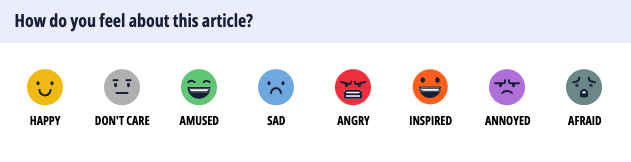
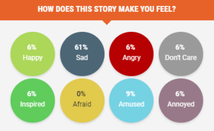
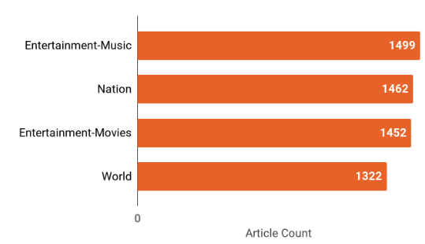
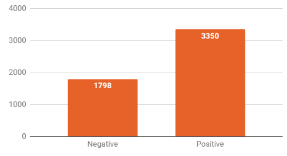
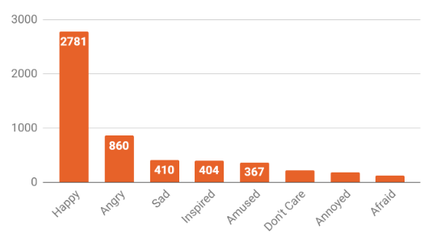
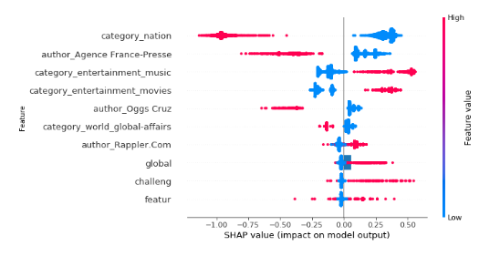

2 Executive Summary
Rappler, one of the leading online news publishers in the Philippines, obtains audience sentiment through the Mood Meter widget embedded in its articles. The Mood Meter allows a reader to select an article’s mood from a set of predefined moods (happy, inspired, amused, sad, angry, afraid, annoyed, don’t care) with varying polarities (positive mood or negative mood). Using machine learning algorithms, we created two classification models to predict a Rappler article’s dominant mood and polarity. A total of 5,735 Rappler articles with metadata such as category, author, and mood ratings were used as the training set. The resulting models can predict the article polarity with 72% accuracy and the article’s dominant mood with 51% accuracy. These models can aid Rappler and other news publishers in content personalization, article engineering, and dynamic ad placement and pricing.
3 Introduction
With the rapid growth of social networking and the internet in general, Rappler has been one of the top news providers in the Philippines by developing and distributing news via the web and social media channels. It is a social news network where stories inspire community engagement and digitally fueled actions for social change.
Rappler deployed “Mood Meter”, similar to Facebook Reactions, and embedded it on each article. Through the widget, Rappler allows readers to share their mood towards an article by answering the question, ”How does the story make you feel?”. Readers choose from a predefined set of emotions, namely: happy, sad, angry, don’t care, inspired, afraid, amused, and annoyed. By that, each article in Rappler will have multiple labeled emotions crowd-sourced from their readers. Figure 1 shows a sample Mood Meter report of an article.

This paper presents two models that implement Sentiment Analysis by predicting the mood and polarity of a given Rappler article. The paper is organized as follows: Section 4 describes related work on emotion classification using different language resources, features, and algorithms; Section 5 discusses the methodology; Section 6 discusses the model performance; lastly, Section 7 discusses the conclusions.
5 Methodology
5.1 Data Collection
A total of 5,735 articles were extracted from the Rappler website. As shown in Figure 2, the articles were taken from four categories: Nation (1,462 articles), World (1,322 articles), Entertainment-Movies (1,452 articles), and Entertainment-Music (1,499 articles. Apart from the full text of the article, metadata such as the article’s category, authors, and mood meter values were also extracted. The description of the Rappler data is shown in Table 1.

| Feature | Data type | Description |
|---|---|---|
| category | VARCHAR | Article category (nation/world/entertainment) |
| published | VARCHAR | Published date of the article |
| modified | VARCHAR | Modified date of the article |
| author | VARCHAR | Author of article |
| title | VARCHAR | Article title |
| happy | INT | Percentage of readers who selected “happy” as the article’s mood |
| sad | INT | Percentage of readers who selected “sad” as the article’s mood |
| angry | INT | Percentage of readers who selected “angry” as the article’s mood |
| don’t care | INT | Percentage of readers who selected “don’t care” as the article’s mood |
| inspired | INT | Percentage of readers who selected “inspired” as the article’s mood |
| afraid | INT | Percentage of readers who selected “afraid” as the article’s mood |
| amused | INT | Percentage of readers who selected “amused” as the article’s mood |
| annoyed | INT | Percentage of readers who selected “annoyed” as the article’s mood |
| text | VARCHAR | Article text |
5.2 Featue Extraction
5.2.1 Text Processing
The article text was processed for data analysis prior to feature extraction. Common techniques like converting text to lowercase and removing leading/trailing whitespaces were applied to make text case-insensitive.
Advanced techniques such as stemming were also used to reduce derived words to their root form (e.g., playing, plays, and played were reduced to “play”). Stemming is a technique that reduces inflected or derived words to their base form, which can help to simplify text analysis by treating similar words as the same.
To further prepare the text for analysis, a bag-of-words vectorization technique was applied to the stemmed text. A Bag-of-words vectorization is a technique that represents text data as a sparse matrix of word frequencies, where each row corresponds to a document or text sample and each column corresponds to a unique word in the corpus. Table 2 shows the hyperparameters utilized.
The number of features was limited to 3,730 by performing hyperparameter tuning on the bag-of-words vectorization.
| Parameter | Value |
|---|---|
| min_df | 0.01 |
| max_df | 0.7 |
| ngram_range | (1,3) |
5.2.2 Variable Engineering
The eight mood variables extracted from the Mood Meter are continuous variables and can have a value between 0 and 100. To convert the problem to a classification problem (as opposed to regression), four additional variables were computed from the original article metadata, namely the positivity score, negativity score, polarity, and the dominant mood. Table 3 provides a description of each computed variable. Of these four, the polarity and dominant mood were chosen as the target variables of our models.
| Computed Variable | Data type | Description |
|---|---|---|
| positive_score | INT | Sum of positive moods (happy, inspired, amused) |
| negative_score | INT | Sum of negative moods (angry, afraid, annoyed, sad) |
| polarity | INT | Article polarity, whether negative (0) or positive (1) Negative polarity (polarity=0) if positive_score < negative_score Positive polarity (polarity=1) if positive_score > negative_score |
| dominant_mood | INT | Mood with the highest number of votes from readers 0: happy 1: sad 2: angry 3: dontcare 4: inspired 5: afraid 6: amused 7: annoyed |
The polarity of an article was quantified by grouping the eight moods into two: the positive moods (happy, inspired, amused) and the negative moods (sad, angry, annoyed, afraid, don’t care). If the positivity score (sum of positive moods) is greater than the negativity score (sum of negative moods), the article’s polarity is tagged as positive; otherwise, the polarity is tagged as negative. The dominant mood of an article, on the other hand, was obtained by getting the mood with the highest value.
5.3 Model Evaluation
Two (2) classification models were developed in this study. The first model is a binary classification model that predicts article polarity (negative or positive), while the second model is a multi-class classification model that predicts an article’s dominant mood from eight predefined moods (happy, inspired, amused, sad, angry, afraid, don’t care, annoyed).
Several supervised machine learning algorithms were evaluated in terms of classification accuracy. For the models to be considered effective, they must achieve a classification accuracy greater than the proportional chance criteria (PCC), which is the highest possible random chance of classifying an article without an explicit mathematical model.
5.3.1 Polarity Classification Model
Figure 3 shows the resulting polarity distribution of the articles. In terms of article polarity, the dataset has a proportional chance criterion (PCC) of 54.4%, which means that there is a 54.4% chance of randomly predicting the correct polarity without any model. For our machine learning model to be considered successful, it must achieve a minimum classification accuracy of 1.25PCC or 68%.

5.3.2 Mood Classification Model
The extracted Rappler dataset is highly imbalanced in terms of mood distribution as seen in Figure 4. To address this, Synthetic Minority Oversampling Technique (SMOTE) was implemented. SMOTE is a technique for addressing class imbalance in a dataset by creating synthetic examples of the minority class through interpolation. It helps balance the class distribution and improve the performance of machine learning models. In this scenario, undersampling was utilized to equalize the class distribution among the eight multi-classes. After balancing using SMOTE, a proportional chance criteria (PCC) of 12.5% was achieved. For our model to be considered effective, a minimum classification accuracy of 1.25PCC or 16% must be achieved.

6 Results
6.1 Polarity Classifier
Table 4 shows the performance of the various machine learning algorithms used to predict the polarity of Rappler articles. The Random Forest classifier (with features of 300 trees, maximum depth=3 and, maximum features=30%) is the best-performing algorithm and can predict the polarity of an article with 72.0% accuracy. This is 32% higher than the proportional chance criterion of 54.5%, indicating that our model is successful in classifying Rappler articles based on polarity.
| Machine Learning Method | Training Accuracy | Test Accuracy | Training Time (s) | Test Time (s) | Best Parameter |
|---|---|---|---|---|---|
| KNN (minmax scaling) | 0.729 | 0.710 | 1.794 | 1.316 | n_neighbors: 46 |
| Logistic Regression (l2 penalty, minmax scaling) | 0.739 | 0.708 | 0.250 | 0.003 | C: 0.1 |
| Logistic Regression (l1 penalty, minmax scaling) | 0.720 | 0.720 | 0.199 | 0.003 | C: 0.05 |
| Linear SVM (l2 penalty, minmax scaling) | 0.741 | 0.709 | 0.265 | 0.003 | C: 0.02 |
| Linear SVM (l1 penalty, minmax scaling) | 0.720 | 0.720 | 0.173 | 0.002 | C: 0.01 |
| Non-Linear SVM (rbf kernel, minmax scaling) | 0.720 | 0.720 | 13.375 | 2.549 | C: 1, gamma: auto |
| Non-Linear SVM (poly kernel, minmax scaling) | 0.733 | 0.720 | 13.585 | 2.573 | C: 0.2, degree: 2, gamma: scale |
| Naive Bayes | 0.684 | 0.663 | 0.047 | 0.004 | alpha: 500 |
| Decision Tree | 0.722 | 0.719 | 0.179 | 0.006 | max_depth: 3 |
| Random Forest | 0.721 | 0.720 | 5.052 | 0.110 | max_depth: 3, max_features: 0.3 |
| Gradient Boosting | 0.858 | 0.697 | 9.643 | 0.015 | learning_rate: 0.1, max_depth: 3, max_features: 0.3 |
To further explain the output of our polarity classification model, a Shapley Additive Explanations (SHAP) summary plot of the model was created as shown in Figure 5.
For context, SHAP is a framework for explaining the predictions of machine learning models. It assigns importance values to each feature in a prediction using the concept of Shapley values from cooperative game theory. SHAP values provide a measure of feature importance and can be used to understand how the model is making its predictions.
The horizontal axis indicates the impact of each feature on the target variable, while the color signifies the magnitude of the feature. Among the features used in the model, the article category is the top predictor of article polarity. Being categorized under Nation has a significantly negative impact on the article’s polarity. Conversely, an article that is NOT categorized under Nation (e.g., Entertainment-Music, Entertainment-Movies) is more likely to get positive reactions from readers.

6.2 Mood Classifier
Table 5 shows the performance of the various machine algorithms used to predict article dominant mood. The Gradient Boosting classifier (learning rate=0.15, maximum depth=3 and maximum features=50%) is the best-performing algorithm and can classify the dominant polarity of an article with 51.0% accuracy.
| Machine Learning Method | Training Accuracy | Test Accuracy | Training Time (s) | Test Time (s) | Best Parameter |
|---|---|---|---|---|---|
| KNN (minmax scaling) | 1.000 | 0.292 | 1.315 | 2.097 | n_neighbors: 1 |
| Logistic Regression (l2 penalty, minmax scaling) | 0.7333 | 0.239 | 43.838 | 0.003 | C: 500 |
| Logistic Regression (l1 penalty, minmax scaling) | 0.735 | 0.239 | 223.993 | 0.004 | C: 100 |
| Linear SVM (l2 penalty, minmax scaling) | 0.722 | 0.219 | 76.797 | 0.003 | C: 1000 |
| Linear SVM (l1 penalty, minmax scaling) | 0.722 | 0.217 | 66.984 | 0.004 | C: 100 |
| Non-Linear SVM (rbf kernel, minmax scaling) | 1.000 | 0.463 | 121.646 | 5.137 | C: 500, gamma: ’auto’ |
| Non-Linear SVM (poly kernel, minmax scaling) | 0.999 | 0.426 | 128.128 | 5.239 | C: 500, degree:2, gamma: ’auto’ |
| Naive Bayes | 0.365 | 0.312 | 0.281 | 0.003 | alpha: 5 |
| Decision Tree | 0.421 | 0.418 | 1.312 | 0.007 | max_depth: 5 |
| Random Forest | 0.608 | 0.444 | 17.425 | 0.109 | max_depth: 5, max_features: ‘auto’ |
| Gradient Boosting | 1.000 | 0.510 | 1735.419 | 0.088 | Learning_rate: 0.15, max_depth: 5, Max_features: 0.5 |
7 Conclusions
Sentiment analysis of more than 5000 Rappler articles was conducted using several machine learning models. After collecting data, extracting relevant features and evaluating the models, it is found that Gradient Boosting Method has the best accuracy of 51% in predicting the mood of an article with reference to the baseline accuracy of 16%. On the other hand, Support Vector Machine (RBF) and Random Forest are superior in predicting the polarity with 72% accuracy against the 55% proportional chance criterion. Also, it is found that category is the top indicator for predicting both mood and polarity using superior models.
With said findings, ML is deemed to increase the precision of recommendations and provide a personalized experience to Rappler users. Rappler is recommended to implement a Recommender System to personalize the content of its website for each visitor based on the dominant mood or polarity of the articles being viewed. In the same way, Rappler can use the study in implementing dynamic placements and pricing in their display advertising inventory. With this, advertisers in the Rappler website can acquire huge increases in conversions and sales with a lower cost of acquisition. By understanding better what drives leads, Rappler can take advantage of ML by reengineering its contents to generate moods that attract more stakeholders. Whether the objective is page views, social shares, leads, or revenue, a ranked list of words-provoking sentiments can help Rappler plan resources, priorities, and budgets more effectively.
For future work, we recommend exploring other Rappler article categories and predicting the authorship of Rappler articles based on sentiments.